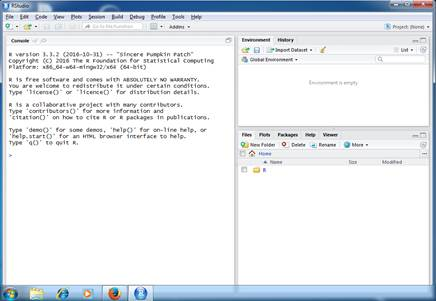

To setup R and R-studio you will first need to identify the Operating System (OS) that your machine is running. The OS will likely be one of the following:
Use the default options during the installation.
Next, navigate and download R
Again, use the default installation options.
Now launch RStudio and you should see the following (or similar) user interface:
Congratulations! You have now setup your environment!
Next, you should take a look at the basic RStudio User Guide (We promise it won't be painful).